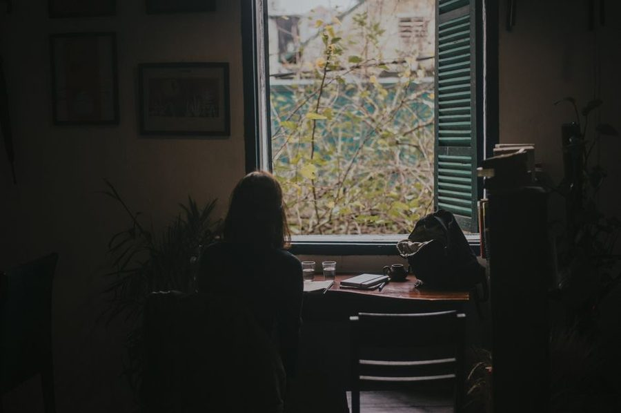

Journal / Attention
What to do on the days focus will not come
Some days the usual routine simply does not take. The useful response is procedural rather than motivational.

In short
- Check sleep, food, heat and dreaded conversations first.
- Shrink the unit until contact with the work is possible.
- Keep a list of low-focus tasks; postpone every decision.
Check the boring causes first
Short sleep, a skipped meal, a room at twenty-eight degrees, or a difficult conversation waiting at four o'clock — these explain most unfocused days, and none of them are fixed by trying harder. Run through the list before concluding anything about discipline.
The four o'clock conversation deserves special mention. Anticipated discomfort occupies attention all day at low volume. Moving it earlier, or writing down exactly what you will say, frequently restores the morning it was quietly consuming.
Shrink the unit until it moves
If an hour is impossible, try fifteen minutes. If fifteen is impossible, try opening the file and reading the last paragraph you wrote. The aim is not a productive day; it is contact with the work, which is what makes tomorrow's start cheaper.
Shrinking works because most resistance is at the threshold, not inside the task. Ten minutes in, the same work that felt impossible is merely work.
Match the task to the state
Low-focus hours are genuinely good for a category of work: filing, formatting, replying to the easy half of the inbox, updating the document nobody has touched, tidying the notes from last week. Keeping a short list of these means a bad morning produces something instead of guilt.
What low-focus hours are not good for is decisions. Postpone anything irreversible; judgement is the first thing to degrade and the last thing you notice degrading.
Stop earlier than usual
A day that never started well rarely rescues itself after seven in the evening. Stopping early, writing the shutdown note and going outside is a better investment in tomorrow than three more hours of pushing against a closed door.
If the pattern repeats for two weeks, it is not a bad day any more — it is a signal about workload, sleep or a problem in the job that has not been named. Treat the second week as the point where you stop optimising the routine and start looking at the cause.
Bad days are data, not verdicts
Keep the one-line mood note from the shutdown routine and a pattern appears within a month: the unfocused days cluster. After long meeting-heavy afternoons, on the days following a late release, in the week a difficult project starts. Clusters point at causes; isolated bad days point at nothing.
It helps to separate two things that feel identical from the inside. Not being able to concentrate is a state that passes in hours. Not wanting to touch a particular piece of work is a signal about that work — an unclear brief, a decision nobody made, a conversation being avoided — and no routine fixes it, because the routine is not the problem.
So on the second or third repeat, stop adjusting the schedule and write down what specifically you are avoiding. The sentence is usually short, slightly uncomfortable, and immediately actionable, which is the tell that it was the real obstacle the whole time.
The difference between tired and stuck
Tired improves with a break, food, air or sleep. Stuck does not — it improves with clarity, and no amount of rest resolves a task whose next step is genuinely unknown.
The test takes two minutes. Write the next physical action in one sentence. If it comes out easily and you still cannot face it, you are tired. If you cannot write it at all, you are stuck, and the useful move is to make the next step smaller or find the person who knows what it is.
Confusing the two produces the classic bad afternoon: rest that does not help, followed by guilt about the rest, followed by three hours of pushing at a task that was never about energy in the first place.
Restarting a stalled project
Projects that have been stalled for weeks develop a coating of dread that is entirely separate from their difficulty. Opening the file becomes the hard part, and the file gets avoided in ways that are barely conscious.
The reliable way back in is a session with no output requirement: open the material, read what exists, and write a short summary of where it stands and what the next three steps are. Nothing is produced, so nothing can go badly, which is what makes the session possible at all.
Nine times out of ten the summary itself lowers the dread — the work turns out to be less broken than remembered — and the first of the three steps gets done immediately because it is small and now visible. On the tenth occasion the summary reveals that the project is genuinely blocked on someone else, which is also worth knowing, and is the sort of thing that can quietly cost a month.
The Thursday letter
One short piece a week — usually a method someone on the desk tried and either kept or dropped. No attachments, no course, no schedule creep.
Also on the desk

Task lists that survive Tuesday
Planning

Meetings that earn their slot
Working hours

The real cost of switching tabs
Attention